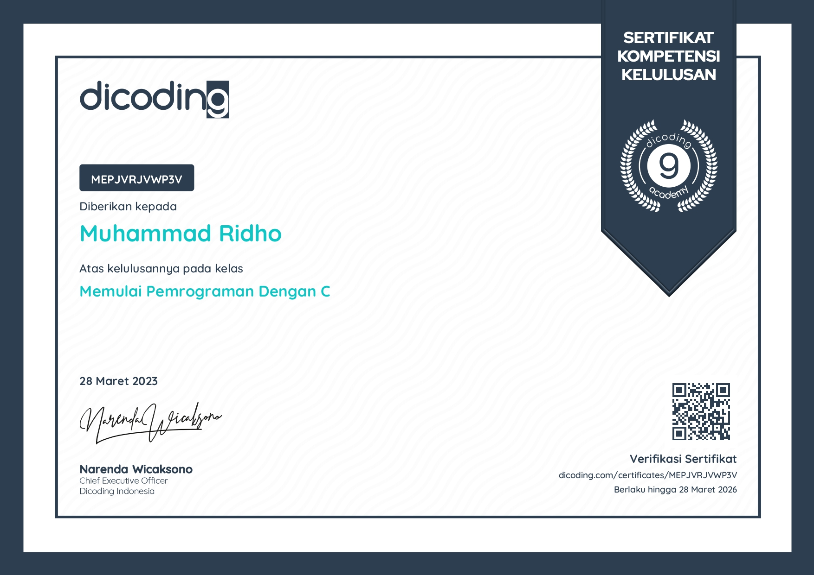
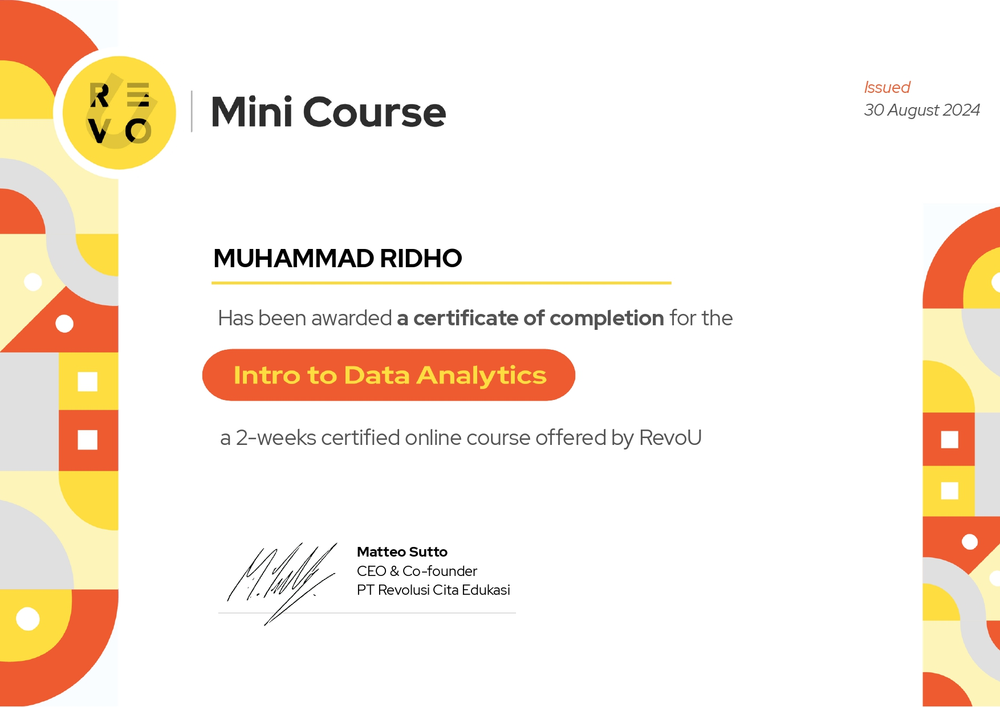
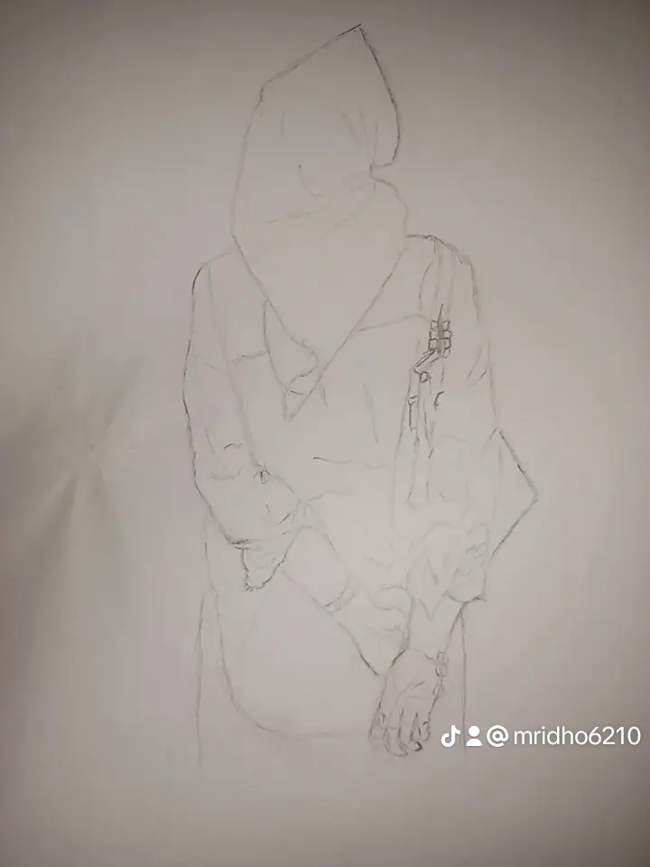
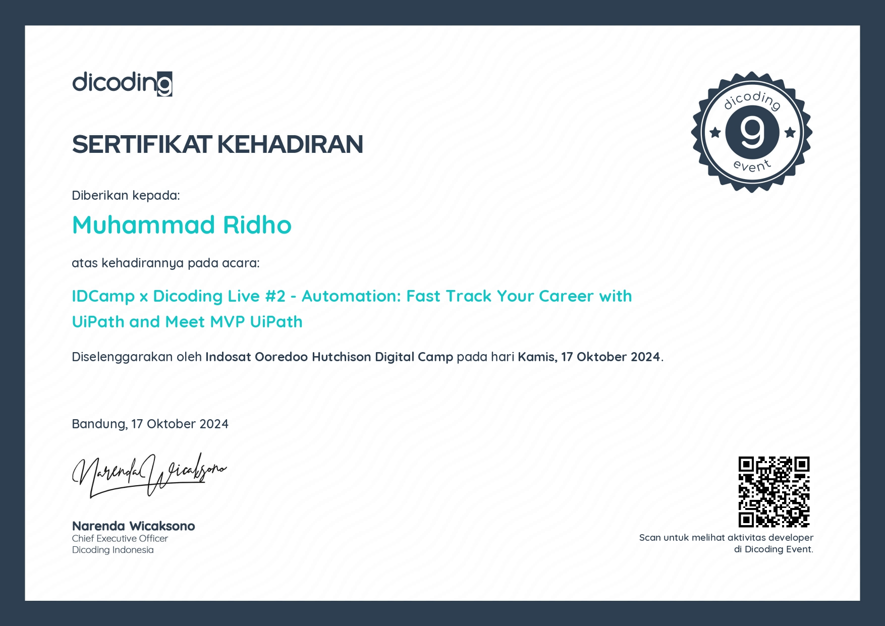

My Projects

Belajar Bahasa Pemrograman dengan C++ dan membuat web melalui Notepad.

Mengikuti Mini Course tentang Data Analyst salah satunya menggunakan Spreadsheet.
_page-0001.jpg)
Sertifikasi bahasa pemrograman python melalui Dqlab.

Hasil menggambar pribadi.

Sertifikat Dicoding untuk hadir dalam idcamp.